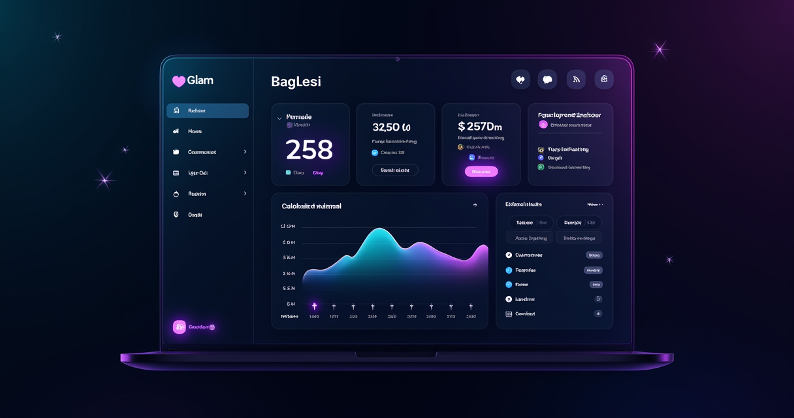

What is Glam AI Web?
Glam AI Web is an AI-powered creative platform that generates professional-quality photos, videos, and visual effects from simple selfies and text prompts. Originally launched as a mobile app, the web version brings the same AI-powered creative tools to desktop browsers — making it accessible to content creators, social media managers, and anyone who wants polished visual content without traditional photography, videography, or editing expertise.
The platform's core appeal is its simplicity. Upload a selfie, and Glam AI generates lifestyle photos in different settings, hairstyles, outfits, and styles. Create short-form videos with your face in trending formats. Apply VFX effects that would normally require After Effects skills. Generate product photos, social media content, and marketing visuals from text descriptions. The AI handles the creative heavy lifting; you just choose the direction.
In 2026, Glam AI has expanded significantly beyond basic face filters into a full creative suite. Features like Motion Swap create lifestyle videos with your face in natural settings. Kling 3.0 integration enables super-realistic AI videos with lip-sync. Seedream 5.0 and Recraft v4 Pro power next-gen image generation. The platform now competes not just with photo editors but with content creation workflows that previously required cameras, lighting, and post-production.
Key Features
Glam AI Web packs a wide range of AI-powered creative tools into a browser-based platform:
- Motion Swap: Upload a selfie and generate short lifestyle videos featuring your face in natural settings — walking through a city, working in an office, enjoying a coffee shop. No filming required. The AI composites your face into realistic video scenes with natural lighting and movement. Perfect for social media content and personal branding.
- AI Photo Generation: Create professional-quality photos from a single selfie in dozens of styles — professional headshots, lifestyle shots, fashion editorials, artistic portraits, and trending looks. The "Daily Shots" feature generates a new set of photos daily without additional input. Consistent quality across every generation.
- Hairstyle Try-On: Virtually try different hairstyles, colors, and cuts before committing to a salon visit. Upload a photo and see yourself with dozens of different looks. Saves the awkward "I showed the stylist a photo and it looked nothing like that" experience.
- VFX Effects: Apply cinematic visual effects to photos and videos — particle effects, lighting effects, transformations, and stylistic filters. Effects that would require hours in After Effects are applied in seconds. Trending effects are updated regularly to match social media trends.
- AI Video Generation: Create short AI-generated videos using models like Kling 3.0 and Grok Imagine. Text-to-video, image-to-video, and face-to-video pipelines produce social-ready content in seconds. Lip-sync capabilities enable talking-head style videos from a single photo.
- Image Generation Models: Access to multiple AI image models including Nano Banana Pro, Seedream 5.0, and Recraft v4 Pro. Each model has different strengths — from photorealistic portraits to design-oriented graphics. Switch between models based on the output style you need.
- Fix Everything: One-tap photo enhancement that handles skin smoothing, lighting correction, background cleanup, and overall polish. Not heavy-handed retouching — intelligent enhancement that makes photos look their best while keeping them natural.
- Trend-Based Looks: AI-generated styles that match current social media trends. When a particular aesthetic goes viral on TikTok or Instagram, Glam AI adds it as a one-click style option. Stay on-trend without manually editing each post.
Who Is Glam AI Web For?
Glam AI Web serves anyone who needs visual content but lacks the time, skills, or equipment for traditional content creation:
Social media content creators who need to post consistently across platforms but can't afford professional photoshoots or spend hours editing. Glam AI generates a week's worth of content from a single selfie — different settings, different styles, different moods. The trend-based looks feature keeps content aligned with what's currently performing on each platform.
Personal branding professionals — real estate agents, coaches, consultants, freelancers — who need polished headshots, lifestyle photos, and video content for their online presence. A single selfie session produces dozens of professional-quality images suitable for LinkedIn, websites, marketing materials, and social profiles. No photographer scheduling, no studio fees, no retouching invoices.
E-commerce sellers and small brands who need product imagery and lifestyle content without hiring models and photographers. Generate on-model photos, lifestyle shots, and promotional visuals using AI. Test different visual styles for ads and listings without expensive photo shoots. The "Fix Everything" feature polishes product photos to marketplace-ready quality.
Marketing agencies and social media managers handling multiple client accounts with constant content demands. Glam AI's speed — generating dozens of visuals in minutes — enables agencies to produce more content per client without proportional increases in production costs. The variety of AI models means each client can have a distinct visual style.
The future of content creation isn't about having the best camera or the most expensive editing software. It's about having the best AI — and using it to turn a single selfie into a month of professional content.
Pros & Cons
Pros
- Incredibly fast — professional-quality photos and videos generated in seconds from a single selfie
- Multiple AI image models (Nano Banana, Seedream, Recraft) offer diverse output styles
- Motion Swap video feature is unique — creates lifestyle videos that look naturally filmed
- Trend-based looks keep content aligned with current social media aesthetics
- Hairstyle try-on is genuinely useful before committing to a salon change
- 50% ambassador commission is one of the most generous affiliate programs in the creative AI space
- Browser-based — no software installation, works on any device with a web browser
Cons
- AI-generated content can occasionally look uncanny — quality varies by input photo quality
- Video generation is limited to short clips (typically under 15 seconds)
- Credit-based system means costs scale with usage for high-volume creators
- Some features require specific lighting in the source selfie for best results
Pricing
Glam AI Web uses a credit-based system where different features consume different amounts of credits:
- Free Tier: Limited daily credits for basic photo generation and effects. Enough to test the platform and see output quality before committing. Access to core features with usage caps.
- Premium Plans: Increased credit allocations for higher-volume creation. Pricing varies by credit package — larger packages offer better per-credit value. Video generation and advanced AI models consume more credits than basic photo generation.
- Ambassador Program: 50% commission on referred purchases. One of the highest commission rates in the creative AI category. Share your link and earn on every purchase your referrals make.
Compared to hiring a photographer ($200-500 per session), a videographer ($500-2,000 per project), or purchasing stock photos ($10-50 per image), Glam AI's per-credit costs deliver professional content at a fraction of traditional prices. The free tier alone produces more content than a single professional photo session.
Get Started with Glam AI Web →How Glam AI Web Compares
Against Midjourney and DALL-E, Glam AI is more focused on face-based content creation rather than general image generation. Those tools produce stunning abstract and conceptual images; Glam AI excels at putting YOUR face into professional content. Different tools for different purposes — Glam AI is the selfie-to-content pipeline.
Against Canva and traditional design tools, Glam AI removes the design skill requirement entirely. Canva gives you templates to customize; Glam AI generates finished content from your photo. Canva is better for brand-consistent marketing materials; Glam AI is better for personal content and social media visuals.
Against professional photography, Glam AI trades some authenticity for speed and cost. AI-generated lifestyle photos look polished but lack the genuine moments that real photography captures. For social media and digital presence, the tradeoff favors AI for volume. For brand campaigns and editorial content, real photography still wins.
Verdict
Glam AI Web represents the cutting edge of AI-powered personal content creation. The ability to generate professional-quality photos and videos from a single selfie — in seconds, in a browser, with no editing skills — was science fiction three years ago. In 2026, it's a browser tab away.
The platform's strength is its breadth. It's not just a photo generator or a video tool or an effects studio — it's all three, accessible from one interface with multiple AI models under the hood. The trend-based looks feature is particularly clever, keeping users' content aligned with what's performing on social media without requiring them to manually track trends.
For anyone who needs consistent visual content for social media, personal branding, or marketing, Glam AI Web offers the fastest path from selfie to publishable content. The free tier makes quality verification risk-free, and the 50% ambassador commission makes this both a great tool to use and a strong affiliate opportunity to promote.
Get Started with Glam AI Web →